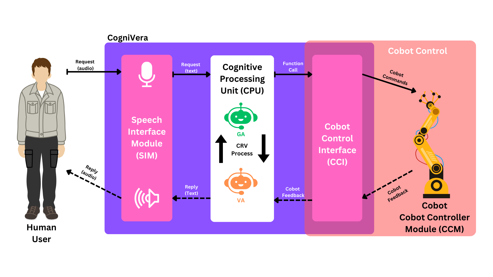

Dual-agent validation
Validates generated outputs before they are used in collaborative robot interaction.
IEEE Access, Vol. 13, pp. 77418–77430, 2025
CogniVera: COGNItive VERification for reliable transformer/LLM-supported human–robot collaboration.
Nadun Ranasinghe, Wael M. Mohammed, Kostas Stefanidis, Jose L. Martinez Lastra

Replace this placeholder with your official framework or architecture figure.
The recent leap in Large Language Models (LLMs) has opened new opportunities for human-robot collaboration (HRC), particularly through natural vocal interaction between human operators and collaborative robots. However, these models remain vulnerable to context-induced errors, misleading information propagation, and hallucinations, which can be problematic in safety- and accuracy-critical industrial settings. This paper introduces CogniVera, a framework that integrates a dual-agent cognitive validation system to validate generated responses during collaborative robot tasks. The approach is evaluated through a focused box-assembly case study using vocal communication, aiming to improve reliability and practical use in human-robot collaboration.
Validates generated outputs before they are used in collaborative robot interaction.
Supports vocal communication between human operators and a collaborative robot.
Evaluates feasibility through a box-assembly collaborative task.
Artificial intelligence, human–robot interaction, large language models, conversational AI, human–robot collaboration.
This work was supported in part by the Finnish Doctoral Program Network in Artificial Intelligence (AI-DOC), under Grant VN/3137/2024-OKM-6, and in part by the European Union’s Horizon Europe research and innovation programme under Grant Agreement No. 101058589, corresponding to the AI-Powered human-centred Robot Interaction for Smart Manufacturing (AI-PRISM) project.
@article{ranasinghe2025large,
title = {Large Language Models in Human–Robot Collaboration With Cognitive Validation Against Context-Induced Hallucinations},
author = {Ranasinghe, Nadun and Mohammed, Wael M. and Stefanidis, Kostas and Martinez Lastra, Jose L.},
journal = {IEEE Access},
volume = {13},
pages = {77418--77430},
year = {2025},
doi = {10.1109/ACCESS.2025.3565918}
}